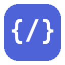

Local API Studio
API 调试工具
在 Edge 里发送 HTTP 请求，管理集合、环境变量和历史记录。支持请求前后脚本，也可以导入 Postman 数据。
EDGE ADD-ONS · OPEN SOURCE
一个用来调接口，一个用来整理 JSON 和 XML。最早是写给自己用的，现在把代码也分享出来。
看看项目
API 调试工具
在 Edge 里发送 HTTP 请求，管理集合、环境变量和历史记录。支持请求前后脚本，也可以导入 Postman 数据。

JSON / XML 格式化工具
粘贴 JSON、XML 或混着日志的文本，就能提取并格式化。支持文档树、搜索、复制，以及最近 20 次历史记录。